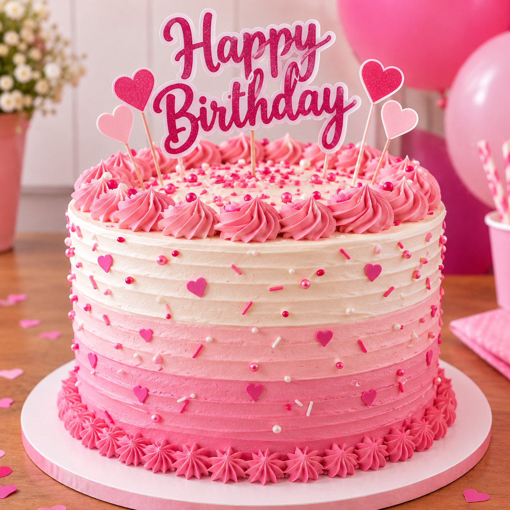
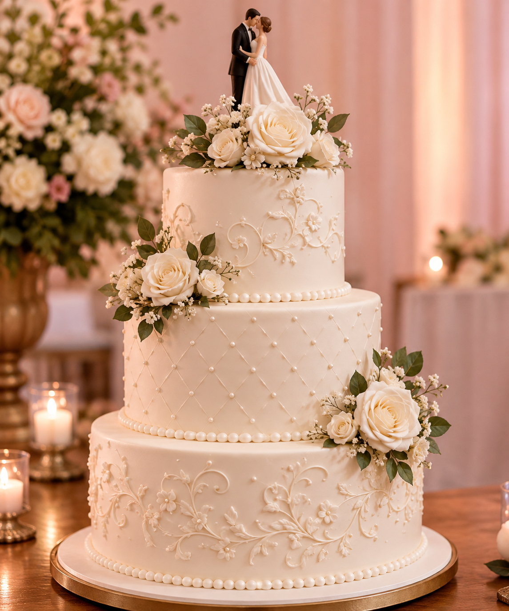
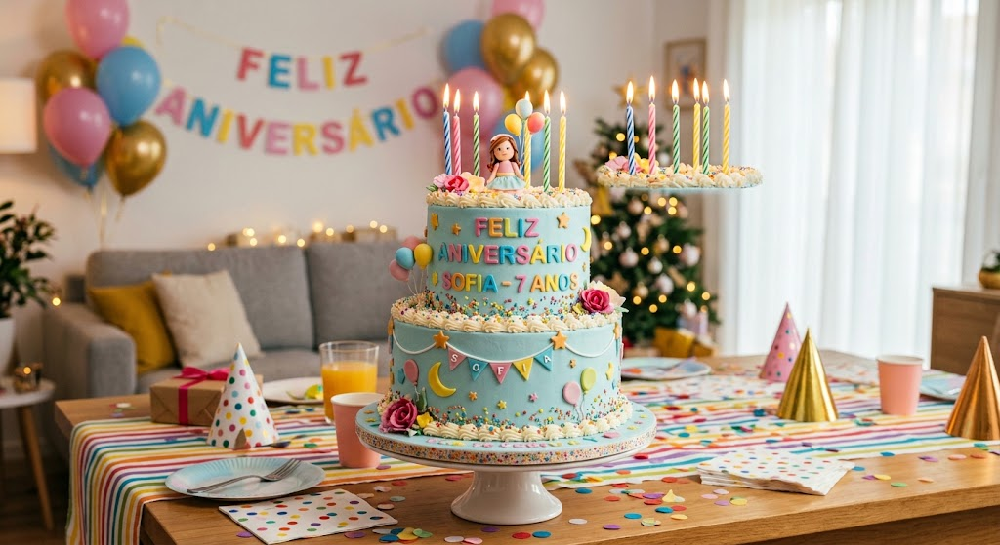
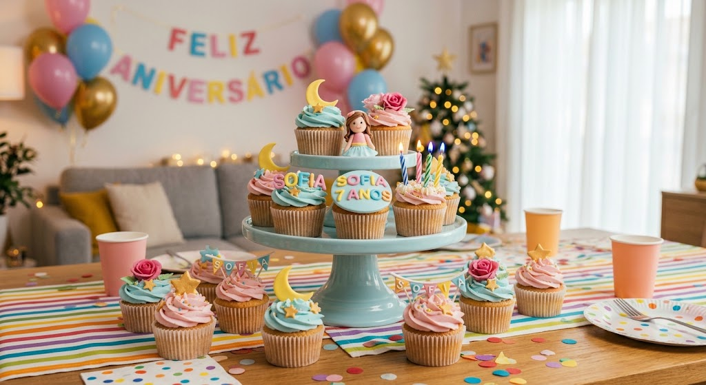

Bem-vindo à Bolos da Neide!
O objetivo do sistema é facilitar a gestão das encomendas da Bolos da Neide, permitindo cadastrar os pedidos, registrar as datas de entrega e organizar as informações dos clientes. O sistema também calcula automaticamente uma taxa de urgência de 30% para pedidos realizados com menos de 24 horas de antecedência, facilitando o atendimento e evitando cálculos manuais.
Principais funcionalidades
- Cadastro simplificado dos clientes.
- Cadastro dos pedidos de bolos.
- Registro da data de entrega.
- Registro do tipo e tamanho do bolo.
- Organização das encomendas.
- Cálculo automático do valor do pedido.
- Cálculo automático da taxa de urgência de 30%.
- Aplicação da taxa quando o pedido tiver menos de 24 horas.
- Interface personalizada nas cores rosa bebê e branco.
- Fontes grandes para facilitar a visualização.
- Interface simples para facilitar o atendimento.
Nossos Bolos

Bolo de Morango

Bolos para Festas

Bolos de Casamento

Bolos de Aniversário

Cupcakes
Preços dos produtos
| Produto | Descrição | Preço |
|---|---|---|
| Bolo de Chocolate | Bolo recheado de chocolate | R$ 80,00 |
| Bolo de Morango | Bolo recheado com morango | R$ 90,00 |
| Bolo de Aniversário | Bolo personalizado para festas | R$ 120,00 |
| Bolo de Casamento | Bolo decorado personalizado | R$ 250,00 |
| Cupcakes | Kit com 12 cupcakes decorados | R$ 60,00 |